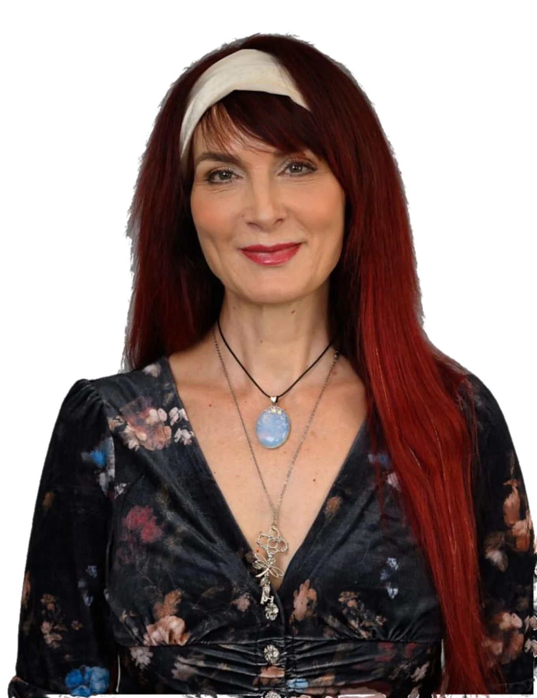
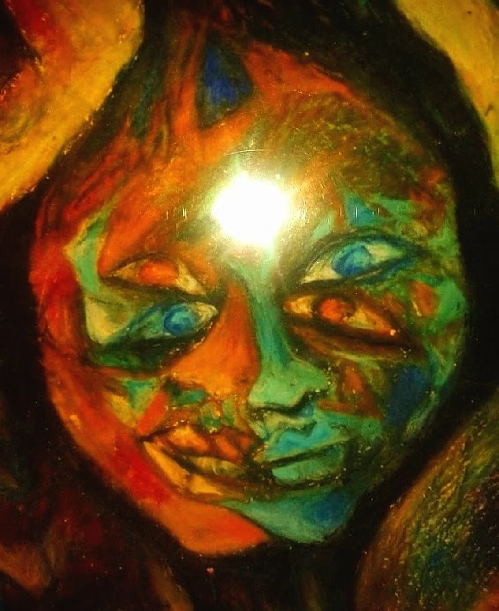
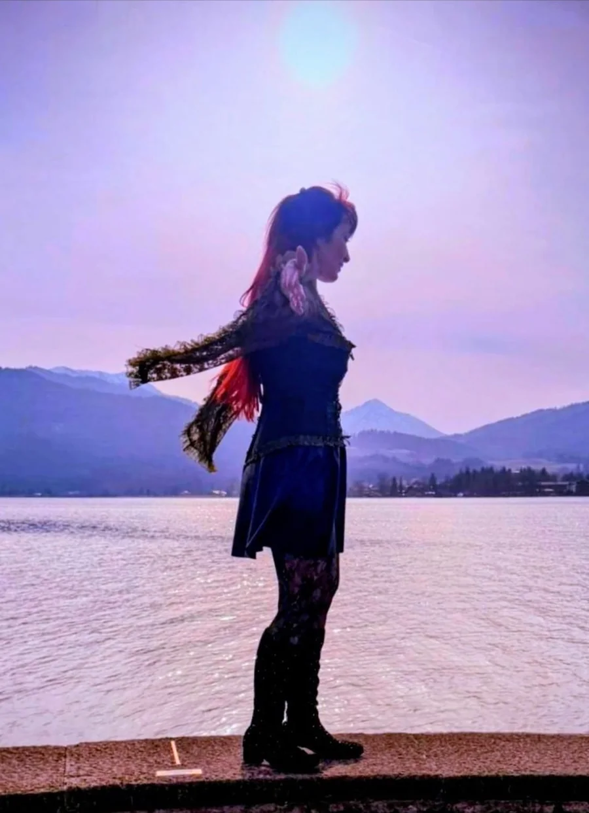
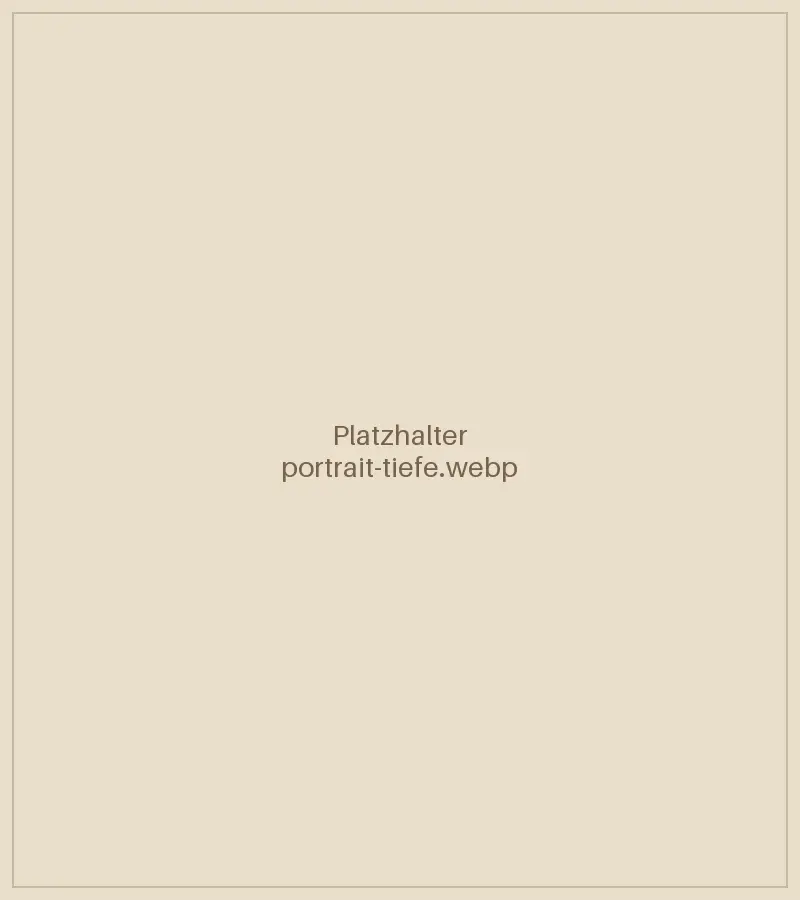
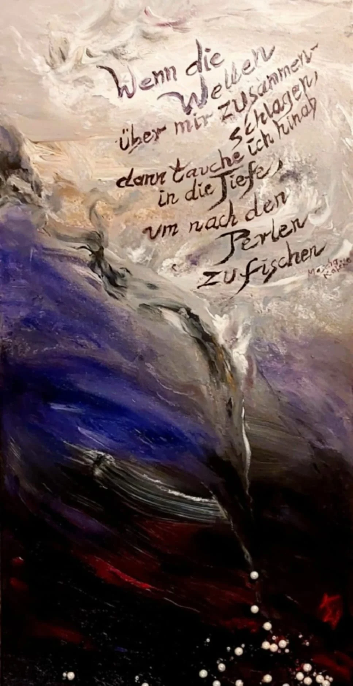
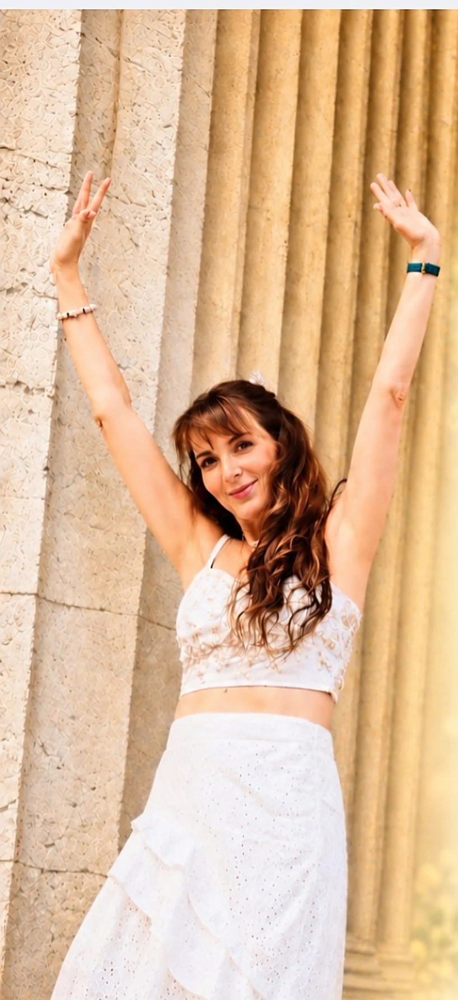

Energetische Bänder lösen
Cord Cutting
Für dich, wenn dich eine Beziehung innerlich noch festhält.
Energiearbeit · Körperwahrnehmung · Kreativer Ausdruck
Beginne die Reise

Spürst du, dass sich etwas in deinem Leben verändern möchte?
Ich begleite dich in deinem persönlichen Veränderungsprozess, mit Energie- und Körperarbeit.
In meiner Arbeit verbinde ich schamanische Energiearbeit mit feiner Körperwahrnehmung und kreativer Integration. Gemeinsam schauen wir auf das, was unter der Oberfläche wirkt, und schaffen Raum für Klarheit, Wandlung und neue Lebendigkeit.
Katharina
Mehr über mich
Alles ist Energie.
Alles, was Form annimmt, ist auch Energie.
Mensch. Tier. Pflanze. Wasser. Erde. Berge. Steine.
Energie ist in allem.
Energie ist nichts Fremdes. Sie zeigt sich in deiner Wahrnehmung, oft lange bevor du Worte dafür hast.
Energie braucht keinen Beweis. Nur deine Bereitschaft, sie wahrzunehmen.
Dann bist du hier richtig.
Das Medizinrad
Die vier Tierarchetypen begegnen uns im Medizinrad der Traditionen der Anden und des Amazonas. Sie verkörpern unterschiedliche Qualitäten des Lebens, die in jedem Menschen angelegt sind. Heute können wir sie als Fähigkeiten und Ressourcen verstehen und für unsere persönliche Entwicklung nutzen.
 3Norden
Kolibri · Lebensfreude
3Norden
Kolibri · Lebensfreude
 2Westen
Jaguar · Tiefer schauen
2Westen
Jaguar · Tiefer schauen
 4Osten
Adler · Neu beginnen
4Osten
Adler · Neu beginnen
 1Süden
Schlange · Loslassen
1Süden
Schlange · Loslassen
Alle vier Winde gehören zusammen. Spür nach, welcher dich gerade ruft, und geh den Weg dann im Ganzen.
Die Reise beginnt im Süden und führt über den Westen und den Norden bis in den Osten.
Die Reise beginnen1 Der Wind des Südens
Loslassen
Die Schlange erinnert dich daran: Du darfst dich verändern. Du musst nicht bleiben, wer du einmal warst.
Alte Geschichten, alte Rollen, alte Häute. Sie dürfen abgestreift werden.
Nicht, weil sie falsch waren.
Sondern weil sie dich hierher gebracht haben.
Und jetzt nicht mehr gebraucht werden.
Die Schlange häutet sich nicht, weil sie es will. Sondern weil sie muss, um weiterzuleben.
Es braucht keinen Kampf, um dich zu erneuern. Nur Ehrlichkeit. Und die Bereitschaft hinzusehen.
Dort, wo du dich noch festhältst. Dort, wo du dich selbst begrenzt.
Die Schlange zwingt nichts. Und doch kommt der Moment, in dem Stillstand keine Option mehr ist.
Und wenn du loslässt, geschieht Wandlung.
Still. Klar. Unausweichlich.
Wir können unsere Geschichte kennen und vieles verstanden haben. Und reagieren doch immer wieder ähnlich.
Die Arbeit setzt tiefer an als beim Reden. Dort, wo Erfahrungen im Körper und im Energiefeld gespeichert sind.
Es geht nicht nur ums Verstehen, sondern ums Erleben. So kann sich Festgehaltenes auf natürliche Weise lösen.
Begleitungen im Süden
Energetische Bänder lösen
Für dich, wenn dich eine Beziehung innerlich noch festhält.
Raum zum Durchatmen
Für dich, wenn du dich dauerhaft angespannt fühlst und kaum noch abschalten kannst.
2 · Weiter mit dem Wind desWestens
2 Der Wind des Westens
Tiefer schauen
Der Jaguar kennt keine Angst vor der Dunkelheit. Er geht hinein.
Dort, wo wir sonst ausweichen, beginnt Wandlung. Still. Wach. Unausweichlich.

Schattenarbeit
Ein Großteil dessen, was uns bewegt, liegt im Verborgenen.
Formt unsere Gedanken. Unsere Entscheidungen. Unser Leben.
In der Schattenarbeit, wie sie von Carl Gustav Jung beschrieben und in der Energiemedizin nach Alberto Villoldo weitergegeben wird, geht es nicht darum, etwas zu reparieren.
Sondern darum, zu sehen.
Was wir nach außen hin sagen und zeigen, ist oft nur die Spitze des Eisbergs.

Darunter liegt unsere ganz persönliche Schattenwelt, mit Ängsten, alten Wunden, ungelebten Anteilen.
Trauen wir uns, das, was im Schatten liegt, als Teil von uns anzuschauen und anzunehmen.
Kennenlernen

Was im Schatten liegt, möchte gesehen und angenommen werden.
Begleitungen im Westen
Auch genannt: das Dreieck der Entmachtung
Für dich, wenn du erforschen möchtest, welche Rollen du (unbewusst) einnimmst.
Aus der Tradition des Amazonas
Für dich, wenn sich etwas in dir schwer, eng oder fremd anfühlt.
Was wir ins Bewusstsein holen, verliert seine Macht.
3 · Weiter mit dem Wind desNordens
3 Der Wind des Nordens
Lebensfreude
Der Kolibri erinnert dich daran, das Schöne im Leben wahrzunehmen und Dankbarkeit zu empfinden.
Er lädt dich ein, dir Leichtigkeit zu erlauben. Und lebensfroh zu sein.

Eine Inspiration für uns alle
Der Kolibri stellt keine Antworten bereit. Aber vielleicht erinnert er dich daran, dir diese Fragen zu stellen.

Vielleicht reicht genau das, um etwas in Bewegung zu bringen.
Die Mesa arbeitet mit dir
Meine persönliche Mesa
Meine Mesa ist ein gewebter, tragbarer Altar. Ein heiliger Raum, geprägt von meinem Weg. In ihr liegen die Kuyas, Steine der Kraft. Jeder trägt eine eigene Qualität und Geschichte. Die Mesa ist Bestandteil jeder Begleitung.
In der Tradition der Q’ero, wie sie durch Alberto Villoldo und The Four Winds Society in die westliche Welt gebracht wurde.
Begleitung im Norden
Eine schamanische Reise zurück zu dir
Für dich, wenn du spürst, dass etwas in dir nach mehr Ganzheit und Lebendigkeit sucht.
4 · Weiter mit dem Wind desOstens
4 Der Wind des Ostens
Neu beginnen
Der Adler steht für Klarheit und Fokus. Für den Blick von oben.
Er sieht das Ganze. Und er erkennt das Wesentliche.
Die Qualität des Adlers
Für die Fähigkeit, Zusammenhänge zu erkennen, ohne sich im Detail zu verlieren.
In der Energie des Adlers entsteht Weite. Der Blick wird klar. Muster werden sichtbar. Orientierung entsteht.
Gleichzeitig erinnert uns der Adler daran, dass wir mit etwas Größerem verbunden sind. Mit einer tieferen Intelligenz, die über den Verstand hinausgeht. Mit dem, was uns führt.
Vision
Träume deine Wirklichkeit ins Leben.
Der Adler lädt dich ein, deine Perspektive zu verändern und dich auszurichten. Auf das, was du wirklich leben möchtest.
Klar. Wach. Fokussiert.
Wie der Adler dich inspirieren kann
In der Tradition der Medizinleute der Anden und des Amazonas ist Gleichgewicht kein Zustand, sondern ein fortlaufender Weg. Es geht darum, achtsam mit dir zu bleiben und wahrzunehmen, was dich aus der Balance bringt, bevor es laut wird.
Wenn du nur noch funktionierstWenn du wahrnimmst
Du hast die Wahl. Sie ist ein Geschenk an dein zukünftiges Ich.
Begleitung im Osten
Was wäre möglich, wenn du sie erweiterst?
Für dich, wenn du merkst, dass du immer denselben Wegen folgst und neue Möglichkeiten suchst.
Meine Begleitungen
Jeder Mensch ist anders. Deshalb wählen wir gemeinsam, was zu dir und deinem Thema passt. Alle Begleitungen basieren auf Werkzeugen der Energiearbeit der Anden und des Amazonas.
Das Herzstück, Teil jeder Begleitung
1 Süden · Loslassen
2 Westen · Tiefer schauen
3 Norden · Lebensfreude
4 Osten · Neu beginnen

Körper, Geist, Emotionen und Energie gehören zusammen. Wenn du zu mir kommst, schaue ich nicht nur auf ein Thema, sondern darauf, was dich bewegt, was dich geprägt hat und was sich jetzt zeigen möchte.
Der Körper lügt nicht. Er zeigt uns, was wir im Alltag oft überhören.
In jeder Begleitung
Ich verbinde die energetische Arbeit mit kreativem Ausdruck. In Farbe, Bewegung, Tanz, Klang oder in einem Bild aus Naturmaterialien. So kannst du das, was sich zeigt, auf deine eigene Weise integrieren und verankern.
Wo wir arbeiten
In der Verbindung mit der Natur verbindest du dich mit dir selbst.
Jedes Setting findet in einem geschützten Raum statt. Auf Wunsch arbeiten wir auch draußen, in direkter Verbindung mit Erde und Himmel. Die Details besprechen wir persönlich, im Einklang mit Wetter und Jahreszeit.
Wie die Passionsblume sich Schicht für Schicht öffnet, entfaltet sich auch Veränderung in ihrem eigenen Rhythmus. Von innen heraus.
Klar. Achtsam. In deinem Tempo.
Du bringst dein Thema mit. Wir schauen gemeinsam auf das, was sich zeigt.
Nichts muss erzwungen werden. Du bestimmst, wie tief du gehen möchtest.
Zeit für dich. Raum für Veränderung.
Einzel-Setting
130 €
Ein Raum nur für dich, für dein aktuelles Thema.
Empfohlen
Begleitzyklus
390 €
Drei aufeinander abgestimmte Sitzungen, um tiefer zu gehen und Veränderung zu verankern.
Intensivbegleitung
520 €
Vier Sitzungen für intensive Themen und langfristige Integration.
Das Kennenlern-Gespräch bis zu 30 Minuten ist kostenfrei.
Gut zu wissen
Nein. Meine Arbeit ist eine energetische und körperorientierte Begleitung und ersetzt keine ärztliche oder psychotherapeutische Behandlung. Sie kann aber eine wertvolle Ergänzung auf deinem Weg sein.
Nein. Offenheit genügt. Du nimmst einfach wahr, was sich für dich zeigt.
Bequeme Kleidung, etwas Zeit danach für dich und ein Glas Wasser.
Das ist individuell. Manche Themen brauchen eine Sitzung, andere einen Zyklus. Wir klären das im Kennenlernen.
Sprich mich gern darauf an. Welche Form für dich passt, klären wir gemeinsam im Kennenlernen.
Das ist kein Problem. Melde dich einfach so früh wie möglich bei mir, dann finden wir gemeinsam einen neuen Termin.
Im kostenlosen Kennenlernen schauen wir gemeinsam, ob und wie ich dich begleiten kann. Unverbindlich und in Ruhe. Schreib mir ein paar Zeilen, ich melde mich zeitnah bei dir.
Das Herzstück meiner Arbeit
Für dich, wenn du das Gefühl hast, alte Geschichten und übernommene Muster lasten auf dir.
In der Energiearbeit der Anden gilt die Illumination als Kernprozess. Wir arbeiten mit den Eindrücken, die prägende Erfahrungen in deinem Energiefeld hinterlassen haben können. Ziel ist, dass sich Schweres lösen darf und du wieder mehr Raum für dich selbst spürst.
Körper · Geist · Emotionen · Energie
Energetische Bänder lösen
Für dich, wenn dich eine Beziehung innerlich noch festhält. Zu einem früheren Partner, zu Eltern, zu Ahnen oder zu anderen Menschen.
Manche Verbindungen binden unsere Energie und halten uns in alten Dynamiken. In einem begleiteten Ritual lösen wir diese Bänder und setzen mit dem rituellen Schnitt ein klares Zeichen.
Damit du frei wirst für neue Verbindungen. Aus deiner eigenen Kraft.
Raum zum Durchatmen
Für dich, wenn du dich dauerhaft angespannt fühlst und kaum noch abschalten kannst.
In fordernden Situationen reagieren wir mit einem uralten Muster: Kampf, Flucht oder Erstarren. Manchmal bleibt dieses Gefühl, obwohl die Situation längst vorbei ist. Die Entkopplung ist ein Werkzeug aus der Energiearbeit des Amazonas, das dir helfen soll, aus diesem Zustand wieder in die Ruhe zu finden.
Viele Menschen erleben dabei Geborgenheit, Sicherheit und einen ruhigeren Atem.
Auch genannt: das Dreieck der Entmachtung
Für dich, wenn du erforschen möchtest, welche Rollen du (unbewusst) einnimmst und wie du aus ihnen herausfindest.
Alles, was triggert, möchte gesehen werden. Jedes Urteil über andere kann uns etwas über uns selbst zeigen. Ich öffne dir einen Raum, um deine Rollen mit den Werkzeugen der Energiearbeit zu erkennen und in deine eigene Kraft zurückzufinden.
Erkennen · Verstehen · Verändern
Aus der Tradition des Amazonas
Für dich, wenn sich etwas in dir schwer, eng oder fremd anfühlt.
In der schamanischen Vorstellung können sich belastende Energien im Energiefeld festsetzen. Manche fest und verdichtet, andere fließend und schwer greifbar. In der Extraktion arbeiten wir mit Atem, Ritual und einem Kristall, um sie wahrzunehmen und zu lösen. Zum Abschluss wird dein Energiefeld stabilisiert.
Leichtigkeit. Ruhe. Wieder bei dir ankommen.
Eine schamanische Reise zurück zu dir
Für dich, wenn du spürst, dass etwas in dir nach mehr Ganzheit und Lebendigkeit sucht.
Prägende Erfahrungen können dazu führen, dass sich Anteile von uns in den Hintergrund zurückziehen, als natürlicher Schutz. Mit deinem Einverständnis gehen wir auf eine schamanische Reise, um diese Anteile zurückzuholen. Du entscheidest, ob du sie wieder annehmen möchtest.
Erinnern · Verbinden · Integrieren · Ganz sein
Was wäre möglich, wenn du sie erweiterst?
Für dich, wenn du merkst, dass du immer denselben Wegen folgst und neue Möglichkeiten suchst.
In der Arbeit mit deiner inneren Landkarte wird sichtbar, was dich geprägt hat, was dich heute steuert und was dich wirklich ruft.
Es ist ein liebevoller Prozess, der dich zurück zu dir bringt. Nicht, um zu bleiben, wie es war, sondern um zu erkennen, was sich weiterentwickeln darf.
Wenn du beginnst, deiner inneren Wahrheit zu folgen, darf sich auch dein Leben bewegen. Auf eine Weise, die sich echt, stimmig und nach dir anfühlt.
Hast du den Mut, eine neue Geschichte zu wählen, die wirklich deine ist?